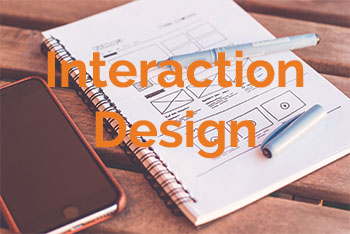
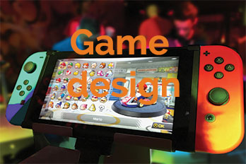
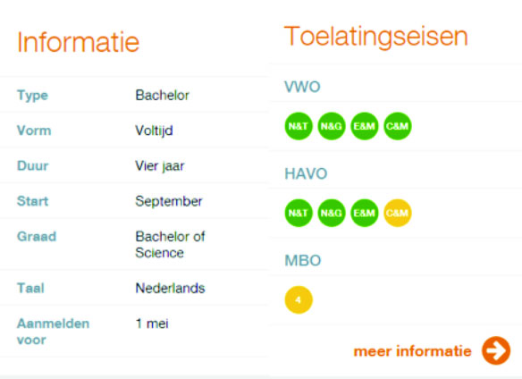

in de major visual design rich je je ophet bedenken en ontwerpen van interactieve producten en belevingen. wat maakt communicatie effectief? hoe kunnen we mensen motiveren om hun gedrag te veranderen? het bedenken en visualiseren van crossmedaile design, merk, en interctieve mediaconcepten is het terrein van een professional op het gebied van visual design. het zijn creatieve denkers die met prikkelende ideeën komen.
In de major van Interactive design verdiep je je kennis van interactive design. hoe werkt de interactie tussen bijvoorbeeld jou en je telefoon? hoe kan je een website of mobiele app zo maken dat het daadwerkelijk iemands leven verbetert? Bij de major interactive design leer je over front-end webtechnologie en user experience. je gaat interactieve toepassingen maken voor smart devices en maakt gebruik van de nieuwste technieken zoals the internet of things.
In de engelstalige major game design hou je je bezig met het beschrijven en uitwerken van gameconcepten en het ontwikkelen van de code voor gameplay. in teamverband leer je hoe je een gameconcept kunt omzetten in een eindproduct. wanneer je de opleiding hebt afgerond, heb je een basisi om applied en entertainment games te maken.
Na het eerste jaar specialiseer je je in een van de majors. Je volgt vakken en doet projecten die passen bij de richting die je gekozen hebt. Je werkt veel in projectgroepen en doet opdrachten voor echte opdrachtgevers. In het derde jaar ga je een half jaar op stage en daarnaast kun je bijvoorbeeld een minor volgen of studeren in het buitenland. Centraal in het vierde jaar staat de afstudeeropdracht. Je gaat op zoek naar een creatieve oplossing voor een complex vraagstuk met behulp
Zowel in het derde als in het vierde jaar ga je een half jaar op stage. Je derde jaar start met een half jaar durende praktijkstage, waarbij je zelf kiest of je je stage in binnen- of buitenland wilt doen. Naast de dagelijkse werkzaamheden werk je aan een specifieke opdracht. Je kunt zelf een stageplaats zoeken, maar ook de opleiding heeft een groot aanbod van stageadressen waar je uit kunt kiezen. Ook in het vierde jaar ga je een half jaar op stage. Tijdens deze stage doe je je afstudeeropdracht.
